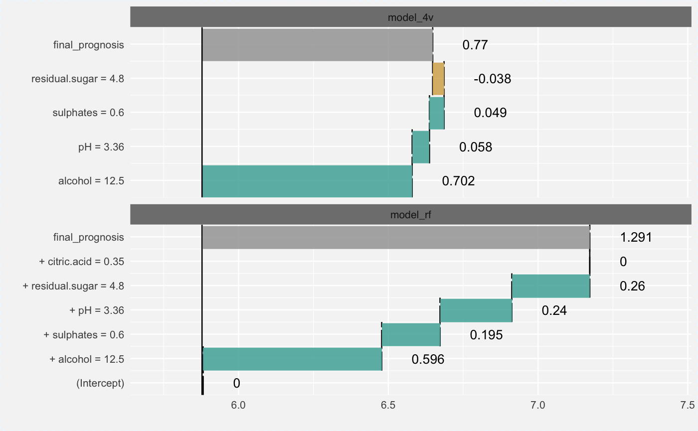

Plots Local Explanations (Single Prediction)
Function 'plot.single_prediction_explainer' plots break down plots for a single prediction.
# S3 method for single_prediction_explainer plot(x, ..., add_contributions = TRUE, vcolors = c(`-1` = "#d8b365", `0` = "#f5f5f5", `1` = "#5ab4ac", X = "darkgrey"), digits = 3, rounding_function = round)
Arguments
| x | a single prediction exlainer produced with the 'single_prediction' function |
|---|---|
| ... | other explainers that shall be plotted together |
| add_contributions | shall variable contributions to be added on plot? |
| vcolors | named vector with colors |
| digits | number of decimal places (round) or significant digits (signif) to be used.
See the |
| rounding_function | function that is to used for rounding numbers.
It may be |
Value
a ggplot2 object
Examples
# \dontrun{ library("breakDown") new.wine <- data.frame(citric.acid = 0.35, sulphates = 0.6, alcohol = 12.5, pH = 3.36, residual.sugar = 4.8) wine_lm_model4 <- lm(quality ~ pH + residual.sugar + sulphates + alcohol, data = wine) wine_lm_explainer4 <- explain(wine_lm_model4, data = wine, label = "model_4v") wine_lm_predict4 <- single_prediction(wine_lm_explainer4, observation = new.wine) plot(wine_lm_predict4)library("randomForest") wine_rf_model4 <- randomForest(quality ~ pH + residual.sugar + sulphates + alcohol, data = wine) wine_rf_explainer4 <- explain(wine_rf_model4, data = wine, label = "model_rf") wine_rf_predict4 <- single_prediction(wine_rf_explainer4, observation = new.wine) plot(wine_rf_predict4)# both models plot(wine_rf_predict4, wine_lm_predict4)library("gbm") # create a gbm model model <- gbm(quality ~ pH + residual.sugar + sulphates + alcohol, data = wine, distribution = "gaussian", n.trees = 1000, interaction.depth = 4, shrinkage = 0.01, n.minobsinnode = 10, verbose = FALSE) # make an explainer for the model explainer_gbm <- explain(model, data = wine, predict_function = function(model, x) predict(model, x, n.trees = 1000)) # create a new observation exp_sgn <- single_prediction(explainer_gbm, observation = new.wine) exp_sgn#> variable contribution variable_name #> 1 (Intercept) 0.00000000 Intercept #> alcohol + alcohol = 12.5 0.64246926 alcohol #> pH + pH = 3.36 0.16648794 pH #> sulphates + sulphates = 0.6 0.11901490 sulphates #> residual.sugar + residual.sugar = 4.8 0.04287583 residual.sugar #> citric.acid + citric.acid = 0.35 0.00000000 citric.acid #> 11 final_prognosis 0.97084793 #> variable_value cummulative sign position label #> 1 1 0.0000000 0 1 gbm #> alcohol 12.5 0.6424693 1 2 gbm #> pH 3.36 0.8089572 1 3 gbm #> sulphates 0.6 0.9279721 1 4 gbm #> residual.sugar 4.8 0.9708479 1 5 gbm #> citric.acid 0.35 0.9708479 0 6 gbm #> 11 0.9708479 X 7 gbmplot(exp_sgn)plot(wine_rf_predict4, wine_lm_predict4, exp_sgn)#}